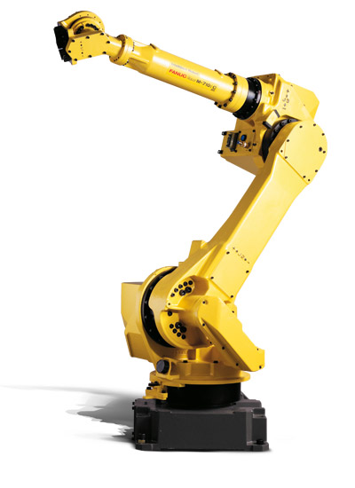
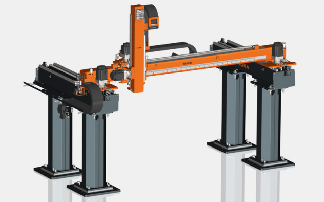
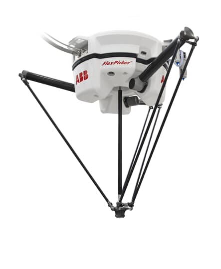
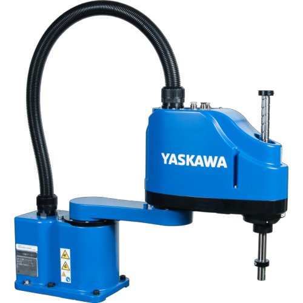
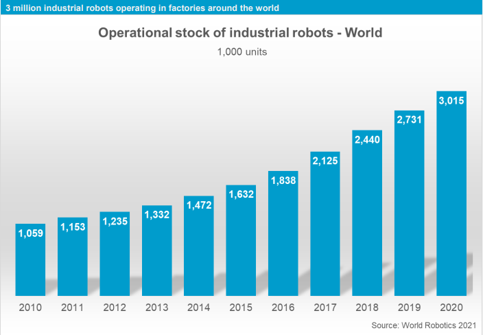
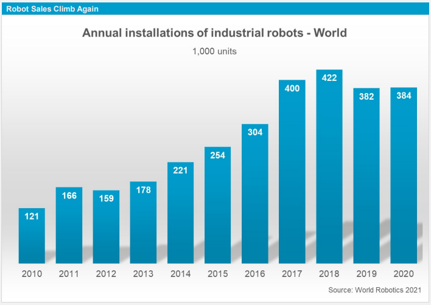
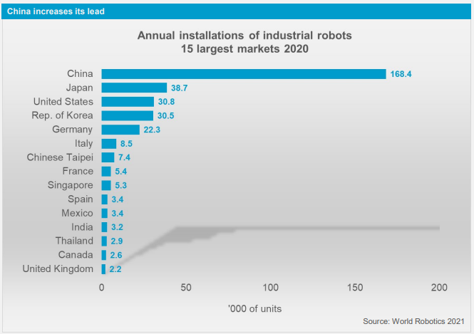

Una introducción a los manipuladores seriales#
¿Qué es un robot?#
Según la norma ISO 8373:2012, un robot es un mecanismo accionado programable en dos o más ejes con cierto grado de autonomía, que se mueve dentro de su entorno para realizar las tareas previstas. Los mecanismos accionados que carecen de la cantidad de ejes programables o que son completamente teleoperados (sin grado de autonomía) pero satisfacen las definiciones de robots industriales o de servicio, se denominan dispositivos robóticos.
Los robots se pueden clasificar en dos grandes tipos de acuerdo con su aplicación prevista: robots industriales o robots de servicio. Los robots industriales son robots para uso en aplicaciones de automatización industrial, mientras que un robot de servicio realiza tareas útiles para humanos o equipos, excluyendo aplicaciones de automatización industrial.
El tipo de estructura mecánica y/o la composición cinemática de un robot es insuficiente para distinguir los robots industriales de los de servicio. Por lo tanto, según la definición de ISO, la aplicación es un criterio suficiente para distinguir los robots industriales de los de servicio, pero la cinemática no lo es.
Un robot industrial es un manipulador multipropósito, reprogramable y controlado automáticamente, programable en tres o más ejes, que puede ser fijo o móvil para su uso en aplicaciones de automatización industrial.
Es decir, los robots industriales tienen al menos tres ejes (direcciones utilizadas para especificar el movimiento del robot en modo lineal o giratorio) y satisfacen todas las características que a continuación se describen:
Controlado automáticamente: el sistema de control del robot funciona de acuerdo con el programa de tareas. El programa de tareas es un conjunto de instrucciones para funciones de movimiento y auxiliares que definen la tarea específica prevista. Lo opuesto a la operación controlada automáticamente es la operación manual, donde un operador humano usa dispositivos de entrada para controlar los movimientos de la máquina.
Reprogramable: diseñado para que los movimientos programados o las funciones auxiliares puedan cambiarse sin alteración física. Las alteraciones físicas son alteraciones del sistema mecánico. Esto no incluye medios de almacenamiento, ROM, etc.
Multipropósito: capaz de adaptarse a una aplicación diferente con alteración física.
Fijo en su lugar o móvil: el robot se puede montar en un punto estacionario pero también se puede montar en un punto no estacionario (sobre un riel, por ejemplo). En los últimos años, se popularizó la combinación de brazos robóticos y Robots Móviles Autónomos (AMR).
En este texto usaremos los términos robot, manipulador serial y brazo robótico, de forma intercambiable para referirnos a un robot en el sentido que lo describe la RIA: un robot es un manipulador multifuncional reprogramable diseñado para mover materiales, partes, herramientas o dispositivos especializados a través de movimientos programados para la ejecución de una variedad de tareas.
Clasificación de robots de acuerdo con su estructura mecánica#
De acuerdo con la IFR (International Federation of Robotics) los robots se pueden clasificar por su estructura mecánica de la siguiente manera:
Robot articulado
Robot cartesiano
Robot cilíndrico
Robot paralelo
Robot SCARA
Otros
Un robot articulado es aquel cuyas articulaciones son todas revolutas. La mayoría de los manipuladores industriales tienen esta estructura mecánica. Se suele denominar a este robot también como antropomórfico, por la similitud de su estructura con los movimientos del cuerpo humano. En la Figura fanuc-M-710iC} se muestra un robot industrial FANUC M-710iC, el cual es un robot de 6 grados de libertad.
{kind=link}

En un robot cartesiano las primeras tres articulaciones son prismáticas. Las variables articulares del manipulador cartesiano son las coordenadas cartesianas del efector final con respecto a la base. En general, la descripción cinemática de este manipulador es la más simple de todos los manipuladores. Los manipuladores cartesianos son útiles para aplicaciones de ensamblaje de mesa y, como robots de pórtico, para la transferencia de material o carga. En la Figura Fig. 2 se puede observar un robot cartesiano KUKA KR 300LP.
{kind=link}

Un robot paralelo es aquel en que posee dos o más cadenas cinemáticas que conectan la base (plataforma fija) con el efector final (plataforma móvil). La cinemática de cadena cerrada de los robots paralelos puede dar como resultado una mayor rigidez estructural y, por lo tanto, una mayor precisión que los robots de cadena cinemática abierta. En la Figura Fig. 3 se puede observar el robot paralelo ABB IRB 360 FlexPicker, el cual de acuerdo con el fabricante es capaz de las aplicaciones de recolección más rápidas y se ha optimizado para aplicaciones de embalaje.
{kind=link}

Un robot SCARA (Selective Compliant Assembly Robot Arm) tiene cuatro grados de libertad, usualmente tiene dos revolutas que sirven para la parte del posicionamiento en un plano, una unión prismática que define altura en dirección vertical y una junta de revoluta que permite orientar el elemento terminal rotando alredededor de la dirección vertical. En la Figura Fig. 4 se muestra un manipulador SCARA Yaskawa SG400.
{kind=link}

Fig. 4 Robot industrial SCARA Yaskawa SG400.#
Algunos datos sobre los robots industriales#
En esta sección se listan algunos datos reportados en el World Robotics 2021 de la IFR. En 2020, el stock operativo de robots industriales se calcula en \(3,014,879\) unidades (\(+10\%\)). En la Figura Fig. 5 puedes observar el crecimiento de robots industriales instalados en fábricas de todo el mundo.
{kind=link}

Fig. 5 Stock de robots industriales#
De acuerdo con la IFR, desde \(2010\), la demanda de robots industriales ha aumentado considerablemente debido a la tendencia actual hacia la automatización y la continua innovación tecnológica en robótica industrial. En \(2010\), las inversiones aumentaron e impulsaron las instalaciones de robots hasta \(120,000\) unidades. Para \(2015\), las instalaciones anuales se habían más que duplicado a casi \(254,000\) unidades. En \(2016\) se superó la marca de las \(300,000\) instalaciones por año y en 2017 las instalaciones aumentaron a casi \(400,000\) unidades. La marca de las \(400,000\) unidades al año se superó por primera vez en 2018. En 2020 se instalaron alrededor de \(384,000\) unidades. En la Figura Fig. 6 puedes observar la variación de robots industriales instalados anualmente en todo el mundo.
{kind=link}

Fig. 6 Instalaciones anuales de robots industriales#
La IFR reporta que Asia es el mercado de robots industriales más grande del mundo. En 2020, se instalaron \(266,452\) unidades, un \(7\%\) más que las \(249,598\) unidades de 2019. Las instalaciones en China crecieron con fuerza (\(168,377\) unidades; \(+20\%\)), mientras que el mercado japonés (\(38,653\) unidades; \(-23\%\)) y el mercado coreano (\(30,506\) unidades; \(-7\%\)) tuvieron ciertas dificultades. Las instalaciones de robots en el segundo mercado más grande, Europa, disminuyeron un 8% a \(67,700\)unidades, por segundo año consecutivo desde un máximo de \(75,560\) unidades en \(2018\). En el continente Americano, las instalaciones cayeron un \(17\%\) a \(38,736\) unidades en \(2020\). Al mayor mercado en esta región, Estados Unidos, le ha ido mejor (\(30,787\) unidades; \(-8\%\) en 2020) que los otros mercados importantes de México (\(3,363\) unidades; \(-26\%\)) y Canadá (\(2,566\) unidades; \(-29\%\)).
En la Figura Fig. 7 se pueden observar los quince países con mayor cantidad de robots instalados durante el \(2020\). México ocupa el décimo primer lugar con las \(3,363\) unidades instaladas.
{kind=link}

Fig. 7 Países con mayor cantidad de robots industriales instalados en 2020#